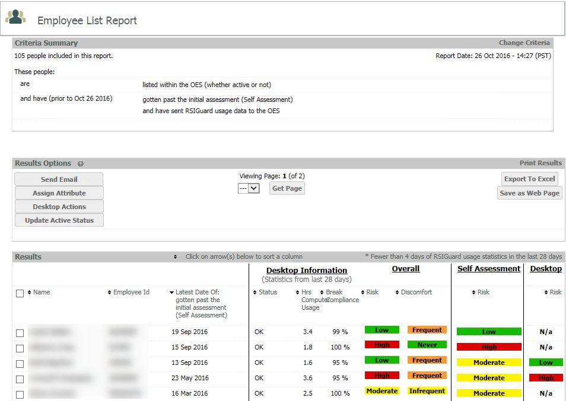
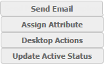
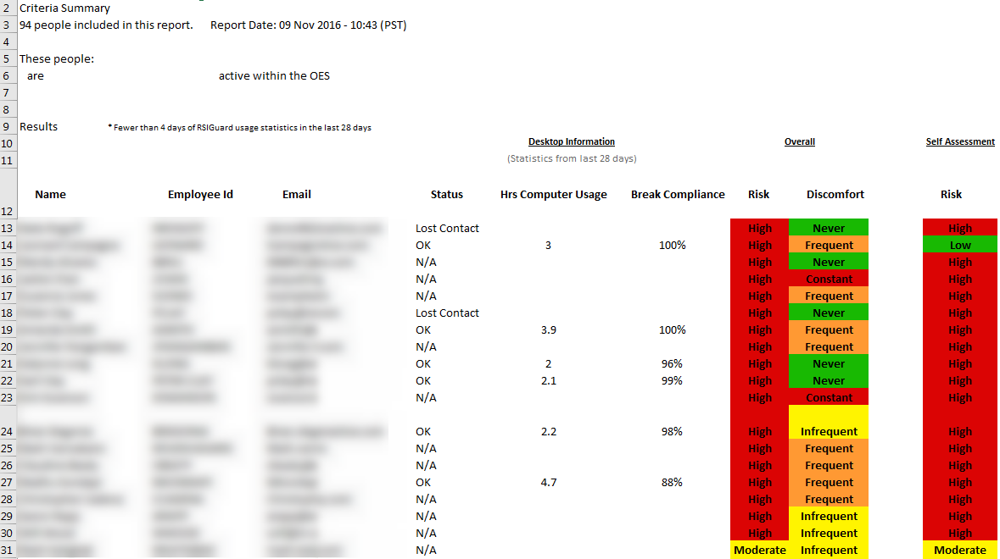

The Employee List Report is a versatile report that forms the basis for all other report types. The report shows detailed OES data for any set of users who meet the specified report criteria.

From the report results you can:
To create an Employee List Report, you will need to set up the criteria for filtering users in the report. You can filter users by:
See Report Criteria for instructions on selecting criteria for reporting. To save time, you can set up and use pre-saved criteria sets in My Saved Criteria.
Once you select your criteria for an Employee List Report, you can use it to run any of the other report types.
Bulk Actions from Employee List Report

From an Employee List Report you can apply several bulk actions from the result list in the report by selecting the users in the report and using the bulk action buttons. Actions include:
Desktop Actions (if enabled): Apply a Desktop Action to selected users. These are actions associated with RSIGuard which can be customized for your system.
Options to Print or Save Results include:
Print Results: Send results to a printer.
Export to Excel: Download results in .xlsx format.
Save as Web Page: Save results as a web page.
Note that you may need to configure some options in Excel in order to download and open Excel files created by OES. A sample Excel output is shown below.
